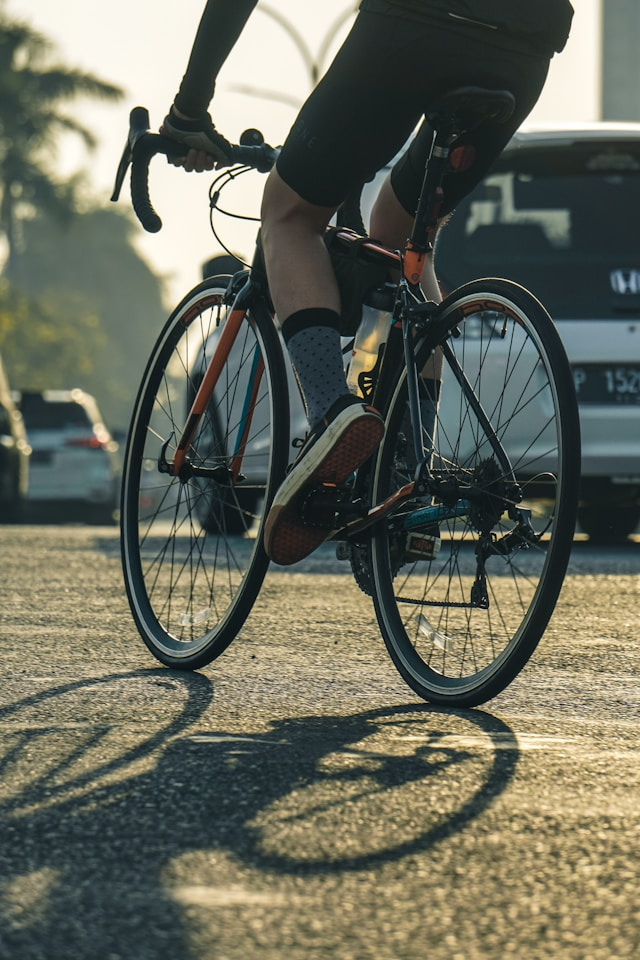

Having the right kit makes a real difference on the bike — not just for comfort, but for safety and performance too. Here’s what you actually need as a beginner, and where to find it without overspending.
Helmet and Glasses: Safety First
A well-fitting helmet is non-negotiable. Designs have come a long way — modern helmets are both protective and genuinely good-looking. Trusted brands include Abus, Kask, Rudy Project, Giro, and Specialized. Buy from a specialist store where someone can check the fit properly. Avoid used helmets — the foam liner degrades over time and impact damage isn’t always visible. The production date is usually printed inside.
Sport sunglasses protect your eyes from insects, debris, and UV — and they add a bit of style too. For beginners, simple sport or safety glasses like Uvex are perfectly fine and very affordable.

Clothing: Comfort for Long Rides
Padded bib shorts are the single most important piece of cycling clothing. They make long rides significantly more comfortable — wear them without underwear. Pair them with a breathable cycling jersey with rear pockets for food, a phone, and a spare tube.
For changeable British weather, a lightweight rain jacket is worth having. Jackets with PTFE membranes are highly waterproof and breathable but environmentally controversial. A simpler PU-coated jacket is a more sustainable choice and works well for most conditions.
For cooler rides, a base layer makes a big difference. Arm warmers and leg warmers are more versatile than dedicated long-sleeve jerseys — you can pack them away mid-ride. Gloves protect your hands from road rash in summer and from the cold in winter.
Cycling Shoes: Efficiency and Control
Once you’re past the beginner stage, clipless pedals and dedicated cycling shoes are worth considering. They attach to the pedal via a cleat on the sole, allowing for more efficient power transfer through the full pedal stroke. The Shimano SPD-MTB system is a good starting point — the shoes have a recessed cleat and proper tread, so you can walk normally off the bike.
Where to Shop
Decathlon is the obvious starting point — good quality, low prices, and a wide range for beginners. Their own brands (Van Rysel, Triban, B’Twin) offer solid value.
For secondhand kit, Vinted and eBay are worth checking. Stick to established cycling brands: Castelli, Sportful, Assos, Kalas, Craft, Nalini, Etxeondo, Biehler, Alé, Gobik, Bioracer, Santini, dhb — functionality matters more than brand prestige, but these names are a reliable indicator of quality.
Club Kit
ICCC offers its own club kit — keep an eye on the news section for kit drops and ordering windows.